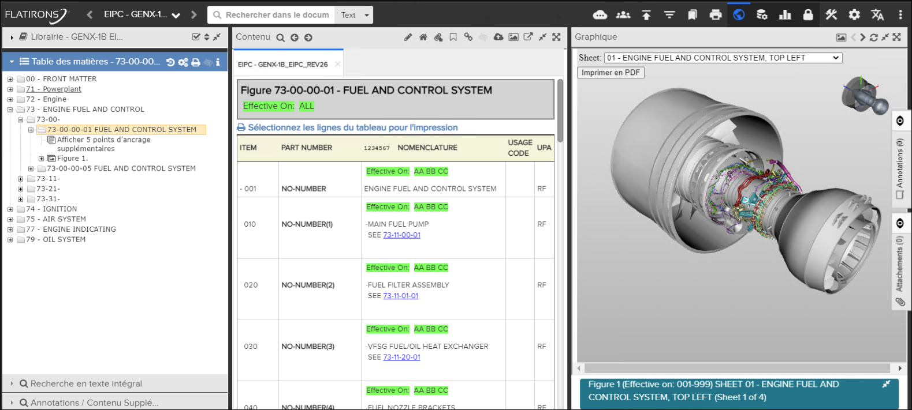

Lors de la visualisation d'un modèle 3D, l'utilisateur a la possibilité d'imprimer le rendu
actuel du modèle 3D à l'aide du "Imprimer au format PDF" sur le panneau graphique.
Référez-vous à l'exemple ci-dessous:

Graphique 3D pour impression au format PDF
Un fichier PDF généré sera téléchargé avec les informations d'en-tête et de pied de page.
Référez-vous à l'exemple ci-dessous:

PDF graphique 3D
Remarque : La résolution et le rapport hauteur/largeur par défaut du rendu 3D sont de 1 024
px par 1 024 px. Ces valeurs peuvent être configurées par un administrateur système pour
fournir de meilleurs rendus sur les impressions en paysage ou sur les impressions en
portrait. Faire référence à "Configure Print 3D Media Resolution" dans
Flatirons Pinpoint Configuration Guide pour plus de détails.